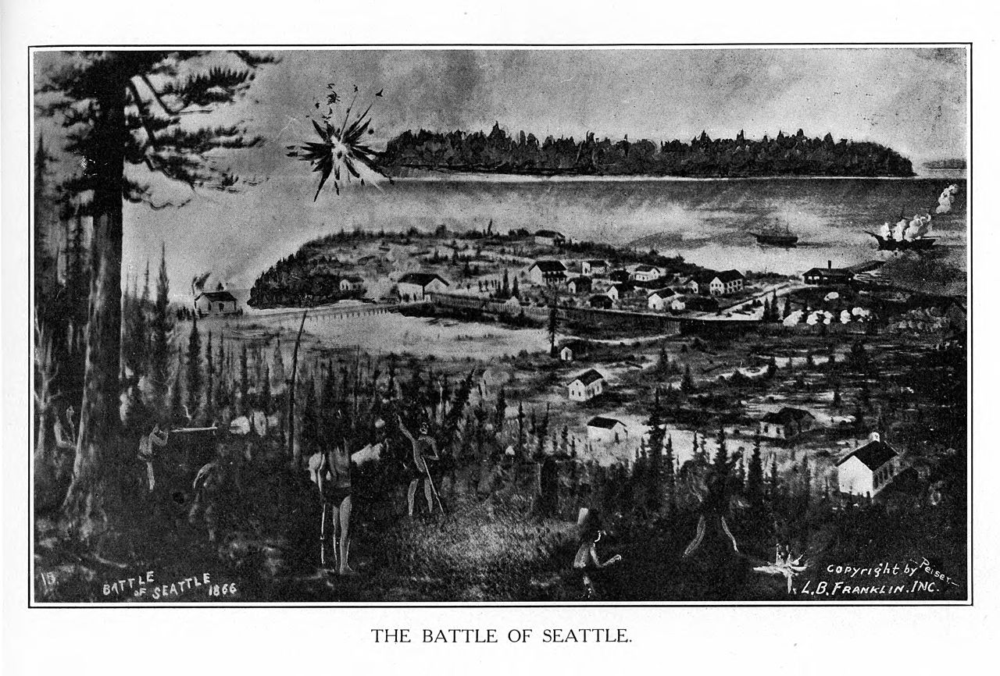

Seattle is a seaport city on the West Coast of the United States. It is the seat of King County, Washington. With an estimated 744,955 residents as of 2018, Seattle is the largest city in both the state of Washington and the Pacific Northwest region of North America. According to U.S. Census data released in 2018, the Seattle metropolitan area' s population stands at 3.94 million, and ranks as the 15th largest in the United States. In July 2013, it was the fastest-growing major city in the United States and remained in the top 5 in May 2015 with an annual growth rate of 2.1%
Archaeological excavations suggest that Native Americans have inhabited the Seattle area for at least 4,000 years. By the time the first European settlers arrived, the people (subsequently called the Duwamish tribe) occupied at least seventeen villages in the areas around Elliott Bay. The first European to visit the Seattle area was George Vancouver, in May 1792 during his 1791–95 expedition for the British Navy to chart the Pacific Northwest. In 1851, a large party led by Luther Collins made a location on land at the mouth of the Duwamish River; they formally claimed it on September 14, 1851. Thirteen days later, members of the Collins Party on the way to their claim passed three scouts of the Denny Party. Members of the Denny Party claimed land on Alki Point on September 28, 1851.[25] The rest of the Denny Party set sail from Portland, Oregon, and landed on Alki point during a rainstorm on November 13, 1851
